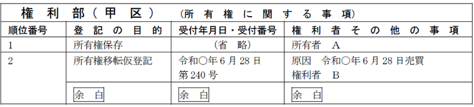
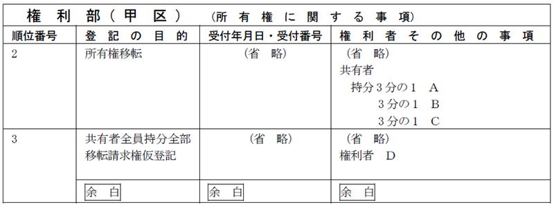
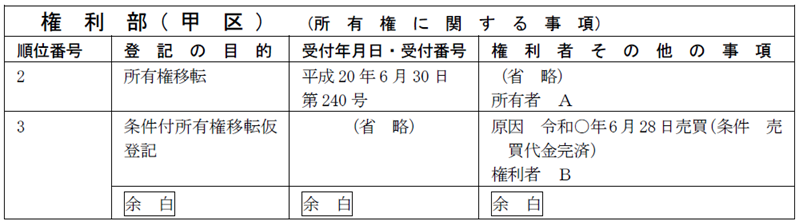

第１編 各 論
第６章 仮登記
第１節 総説
1. 意義
仮登記とは、本登記をするために実体法上の要件又は手続法上の要件が調わないため、将来行われる本登記の順位を保全するために行われる登記のことである。
仮登記には、対抗力は認められないが、仮登記に基づく本登記をすることによって、仮登記の順位が本登記の順位となる（順位保全効、106条）。
2. 仮登記の種類
| 1号仮登記（※1） | 登記すべき物権変動は既に生じているが、登記申請に必要な手続上の条件が不備な場合にすることができる登記（105条1号） |
| 2号仮登記（※2） | 実体法上の物権変動は生じていないが、物権変動を生じさせる請求権（始期付き又は停止条件付きのものその他将来確定することが見込まれるものを含む。）を保全しようとするときに行われる登記（105条2号） |
※1 ex.売買を原因として所有権移転登記をしようとしたが、直ちに登記識別情報を用意できない場合
※2 ex.ＡＢ間で、Ａ所有の土地を将来Ｂに売却する旨の売買の予約が成立した場合における、ＢのＡに対する所有権移転請求権
第２節 仮登記
1. 1号仮登記
(1) 要件
登記申請情報と併せて提供すべき情報のうち、①登記識別情報、②第三者の許可、同意若しくは承諾を証する情報のいずれかを提供することができないとき（105条1号）
(2) 登記申請の手続
(a) 原則
仮登記権利者と仮登記義務者の共同申請によるのが原則である（60条）。
(b) 例外
1号仮登記の申請は、確定判決による登記の申請（63条1項）のほか、次の場合に仮登記権利者の単独申請によることができる（107条1項）。
| ①仮登記義務者の承諾がある場合 | 仮登記は、仮登記義務者の承諾があるときは、当該仮登記権利者が単独で申請することができる。 |
| ②仮登記を命ずる処分がある場合 | 仮登記は、仮登記を命ずる処分があるときは、当該仮登記権利者が単独で申請することができる。 |
仮登記を命ずる処分の申立ては、不動産の所在地を管轄する地方裁判所の 管轄に専属する（不登法108条3項）。
【申請例119 1号仮登記】
事例： 令和○年6月28日、ＡとＢは、Ａ所有土地をＢに売却する契約を締結したが、Ａは、登記識別情報が手元になかったため、Ｂが単独で仮登記を申請することについての承諾書を作成し、Ｂに交付した。土地の課税標準の額は、金1000万円である。

(3) 申請情報の内容
①登記の目的
「所有権移転仮登記」とする。
地上権等が目的の場合は、「○番地上権（永小作権、賃借権）移転（設定）仮登記」とする。
②登記原因及びその日付
登記原因は、「売買」等、日付は、契約締結日（当事者間の合意で別に物権変動を生ずる時期を定めた場合には、その日）とする。
③添付情報
【共同申請による場合】
・印鑑証明書（不登令16条2項、18条2項）
所有権登記名義人が義務者となる場合は、印鑑証明書を提供する。
| 登記識別情報(※1) | × |
| 第三者の許可、同意若しくは承諾を証する情報(※1) | × |
| 住所証明情報(※2) | × |
(※1)これらの情報が提供できない場合に申請するのが仮登記だから（昭39.3.3民甲291）
(※2) 仮登記に基づく本登記の際に提供すれば足りるから（昭32.5.6民甲879）
【仮登記権利者の単独申請による場合】
・承諾証明情報（不登令別表68添付情報ロ）
仮登記権利者が単独で申請する場合、仮登記義務者の承諾を証する当該仮登記義務者が作成した情報を提供する。なお、承諾証明情報が書面で作成されている場合には、原則として仮登記義務者の印鑑証明書を添付しなければならない（不登令19条1項、2項）。
2. 2号仮登記
(1) 意義
物権変動はまだ生じていないが、将来において物権変動を生じさせる請求権が既に発生している場合に、その請求権を保全するためにすることができる登記（105条2号）
(2) 要件（105条2号）
当事者間で登記すべき物権変動は生じていないが、
①将来その物権変動を生じさせる請求権が発生しているとき
ex1.ＡＢ間で、Ａ所有の土地を将来Ｂに売却する旨の売買の予約が成立した場合における、ＢのＡに対する所有権移転請求権
ex2.一定時期までに金銭消費貸借契約を締結すべき約定のもとに、これを担保するためにあらかじめ抵当権設定契約をした場合における抵当権設定請求権（大判昭6.2.27）
ex3.保証人が抵当権者との間の保証契約を登記原因として取得すべき将来の代位弁済による抵当権の移転請求権
ex4.選択債権の一方が不動産の所有権移転である場合における債権者の所有権移転請求権
②その請求権が始期付き又は停止条件付きであるとき
「始期付き又は停止条件付き」とは、例えば、売買予約や売買の一方の予約自体に始期又は停止条件が付されている場合をいう。この予約に基づく所有権の移転請求権は、当該停止条件が成就するまで発生しないが、仮登記をすることが認められている。
ex.ＡＢ間で、Ａ所有の農地を農地法所定の許可を条件に売却する旨の売買の予約が成立した場合、ＢのＡに対する所有権移転請求権を保全するために、所有権移転請求権仮登記を申請することができる（昭32.4.22民甲793）。
③物権変動そのものが始期付き又は停止条件付きであるとき
ex.ＡＢ間で、Ａ所有の土地をＡの死亡時を始期とする死因贈与契約が成立した場合、始期付所有権移転仮登記を申請することができる（登研352P.104）。
ex.Ａを所有権の登記名義人とする土地につき、売主Ａと買主Ｂとの間で、所有権の移転時期が売買代金の完済時とされている特約付きの売買契約が締結された場合において、当該売買代金が完済されていないときは、登記原因を「年月日売買（条件 売買代金完済）」とする停止条件付所有権移転の仮登記を申請することができる（昭58.3.2民3.1308）。
(3) 将来その物権変動を生じさせる請求権が発生している場合の申請情報の内容（上記①）
【申請例120 2号仮登記 請求権仮登記】
事例： 令和○年6月28日、Ａ、Ｂ、Ｃ及びＤは、ＡＢＣ共有土地の売買予約契約を締結した。土地の課税標準の額は、金1000万円である。

(a) 登記の目的
「所有権移転請求権仮登記」と記載する。なお、目的不動産が共有に係る場合には、「共有者全員持分全部移転請求権仮登記」と記載する。
地上権等が目的の場合は、「○番地上権（永小作権、賃借権）移転（設定）請求権仮登記」と記載する。
(b) 登記原因及びその日付
登記原因は「売買予約」等と記載し、日付は、予約契約締結日を記載する。
(c) 申請人
| 仮登記権利者と仮登記義務者の共同申請 | ○ |
| 仮登記義務者の承諾ｏｒ仮登記を命ずる処分がある場合の仮登記権利者の単独申請 | ○ |
(d) 添付情報
①印鑑証明書（不登令16条2項、18条2項）
書面申請かつ共同申請の場合には、仮登記義務者の印鑑証明書を提供する。
②承諾証明情報（不登令別表68添付情報ロ）
仮登記権利者が単独で申請する場合、仮登記義務者の承諾を証する当該仮登記義務者が作成した情報を提供する。なお、承諾証明情報が書面で作成されている場合には、原則として仮登記義務者の印鑑証明書を添付しなければならない（不登令19条1項、2項）。
以下の情報の提供は仮登記なので不要
| 登記識別情報 | × |
| 第三者の許可、同意若しくは承諾を証する情報 | × |
| 住所証明情報 | × |
(e) 登録免許税
所有権の移転請求権保全の仮登記については、1000分の10とされている（登免法別表1.1.12.ロ.(3)）。
(4) その請求権が始期付き又は停止条件付きである場合の申請情報の内容（上記②）
【申請例121 2号仮登記 条件付権利の仮登記】
事例： 令和○年6月28日、ＡとＢは、Ａ所有の甲土地をＢに売却する契約を締結した。その際、代金の完済を条件として所有権が移転する旨の合意をした。なお、Ａは、Ｂが単独で仮登記を申請することについての承諾書を作成し、Ｂに交付している。土地の課税標準の額は、金1000万円である。

(a) 登記の目的
「始期付（条件付）所有権移転請求権仮登記」と記載する。
(b) 登記原因及びその日付
登記原因は「売買予約（条件 農地法第5条の許可）」等と記載し、日付は予約契約締結日を記載する。
(c) 申請人・添付情報・登録免許税
上記①と同じである。
(5) 物権変動が始期付き又は停止条件付きの場合の登記（上記③）
(a) 登記の目的
「始期付（条件付）所有権移転仮登記」と記載する。
(b) 登記原因及びその日付
登記原因は、「贈与（始期 Ａ死亡）」、「売買（条件 売買代金完済）」等と記載し、日付は、契約締結日を記載する。
(c) 申請人・添付情報・登録免許税
上記①と同じである。
| 登記申請の内容 | 1号 | 2号 |
| ①相続を原因とする仮登記 | × | × |
| ②遺贈を登記原因とする仮登記 | ○ | × |
| ③認知裁判の確定前における所有権移転請求権の仮登記 | - | × |
| ④財産分与を登記原因とする所有権の仮登記 | ○ | × |
| ⑤会社分割を登記原因とする所有権の仮登記 | ○ | × |
| ⑥譲渡担保を登記原因とする仮登記 | ○ | × |
| ⑦真正な登記名義の回復を登記原因とする所有権の仮登記 | ○ | × |
| ⑧「信託」を原因とする所有権の仮登記 | ○ | × |
| ⑨民法第646条第2項による移転を登記原因とする所有権移転の仮登記 | ○ | - |
| ⑩農地について農地法所定の許可後に本契約をする旨の贈与予約を原因とする所有権移転請求権仮登記 | - | ○ |
| ⑪甲土地が、売買予約を原因とする所有権移転請求権仮登記がされている工場財団に属している場合において、甲土地について同一の売買予約を原因とする所有権移転請求権仮登記 | - | ○ |
| ⑫抵当権の順位変更の仮登記 | × | × |
| ⑬根抵当権の極度額の変更の仮登記 | ○ | ○ |
①１号：できない（昭57.2.12民3.1295）。単独申請であるため、１号仮登記に該当することがない。
２号：できない（昭32.3.27民甲596）。相続は、開始しなければ（死亡しなければ）、推定相続人には何の権利もない。
②１号：登記識別情報、又は、第三者の許可を証する情報（農地法所定の許可書）
を提供できないということはあり得る。
２号：できない（登研352P.104）。遺贈は、相続が開始しなければ（死亡しなければ）、受遺者（となるであろう者）には何の権利もない。
③認知裁判の確定前の認知請求権者は、相続分を取得する期待権を持つにすぎないため、所有権移転請求権の仮登記を命ずる決定を得ても、仮登記の申請はできない（昭32.3.27民甲596）。
④１号：登記識別情報を提供できないということはあり得る。
２号：財産分与は、離婚が成立しなければ、何の権利も発生しない（昭57.1.16民甲251）。
⑤１号：登記識別情報を提供できないということはあり得る。
２号：会社分割は、分割の効力が生じなければ、何の権利も発生しない。
⑥１号：登記識別情報を提供できないということはあり得る。
２号：できない（昭32.1.14民甲76）。
⑦１号：できる（登研574P.109）。登記識別情報又は第三者の許可を証する情報（農地法所定の許可書）を提供できないということはあり得る。
２号：できない（登研574P.109）。
⑧１号：できる（昭34.9.15民甲2068参照）。登記識別情報を提供できないということはあり得る。
２号：できない（登研508P.172）。信託は、委託者となるべき者と受託者となるべき者との間の信託契約の締結によって効力が生じるためである（信託法4条1項）。
⑨できる。その取得原因が競売による売却であっても、することができる（登研529P.161）。
⑩できる（昭32.4.22民甲793）。
⑪できる。
⑫できない。登研313P.63）。登記が効力要件だからである。
⑬できる（昭41.3.29民3.158）。
※根抵当権の設定の登記がされた不動産について、当該根抵当権の極度額増額の予約に基づく根抵当権の変更請求権保全の仮登記を付記登記でする場合において、利害関係を有する第三者がいるときは、その第三者の承諾を証する情報又は当該第三者に対抗することができる裁判があったことを証する情報を提供しなければならない。